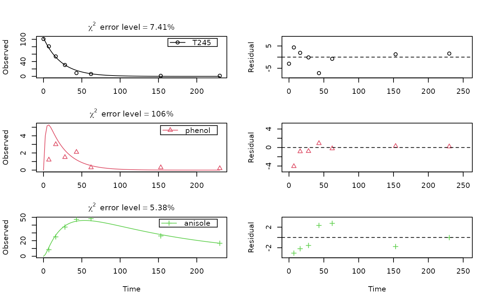

mccall81_245T.RdTime course of 2,4,5-trichlorophenoxyacetic acid, and the corresponding 2,4,5-trichlorophenol and 2,4,5-trichloroanisole as recovered in diethylether extracts.
mccall81_245T
A dataframe containing the following variables.
namethe name of the compound observed. Note that T245 is used as
an acronym for 2,4,5-T. T245 is a legitimate object name
in R, which is necessary for specifying models using
mkinmod.
timea numeric vector containing sampling times in days after treatment
valuea numeric vector containing concentrations in percent of applied radioactivity
soila factor containing the name of the soil
McCall P, Vrona SA, Kelley SS (1981) Fate of uniformly carbon-14 ring labelled 2,4,5-Trichlorophenoxyacetic acid and 2,4-dichlorophenoxyacetic acid. J Agric Chem 29, 100-107 doi: 10.1021/jf00103a026
SFO_SFO_SFO <- mkinmod(T245 = list(type = "SFO", to = "phenol"), phenol = list(type = "SFO", to = "anisole"), anisole = list(type = "SFO"))#>#> Warning: Observations with value of zero were removed from the data#> Estimate se_notrans t value Pr(>t) #> T245_0 1.038550e+02 2.1847074888 47.537272 4.472189e-18 #> k_T245 4.337042e-02 0.0018983965 22.845818 2.276911e-13 #> k_phenol 4.050581e-01 0.2986993400 1.356073 9.756988e-02 #> k_anisole 6.678742e-03 0.0008021439 8.326114 2.623176e-07 #> f_T245_to_phenol 6.227599e-01 0.3985340295 1.562627 6.949412e-02 #> f_phenol_to_anisole 1.000000e+00 0.6718439378 1.488441 7.867787e-02 #> sigma 2.514628e+00 0.4907558750 5.123989 6.233156e-05 #> Lower Upper #> T245_0 99.246061370 1.084640e+02 #> k_T245 0.039631621 4.746194e-02 #> k_phenol 0.218013878 7.525762e-01 #> k_anisole 0.005370739 8.305299e-03 #> f_T245_to_phenol 0.547559083 6.924813e-01 #> f_phenol_to_anisole 0.000000000 1.000000e+00 #> sigma 1.706607296 3.322649e+00#> $ff #> T245_phenol T245_sink phenol_anisole phenol_sink #> 6.227599e-01 3.772401e-01 1.000000e+00 6.894640e-11 #> #> $distimes #> DT50 DT90 #> T245 15.982025 53.09114 #> phenol 1.711229 5.68458 #> anisole 103.784092 344.76329 #># formation fraction from phenol to anisol is practically 1. As we cannot # fix formation fractions when using the ilr transformation, we can turn of # the sink in the model generation SFO_SFO_SFO_2 <- mkinmod(T245 = list(type = "SFO", to = "phenol"), phenol = list(type = "SFO", to = "anisole", sink = FALSE), anisole = list(type = "SFO"))#>#> Warning: Observations with value of zero were removed from the data#> Estimate se_notrans t value Pr(>t) Lower #> T245_0 1.038550e+02 2.1623653027 48.028439 4.993108e-19 99.271020526 #> k_T245 4.337042e-02 0.0018343666 23.643268 3.573555e-14 0.039650977 #> k_phenol 4.050582e-01 0.1177237248 3.440752 1.679252e-03 0.218746585 #> k_anisole 6.678741e-03 0.0006829745 9.778903 1.872894e-08 0.005377083 #> f_T245_to_phenol 6.227599e-01 0.0342197865 18.198825 2.039410e-12 0.547975628 #> sigma 2.514628e+00 0.3790944250 6.633250 2.875782e-06 1.710983655 #> Upper #> T245_0 108.43904097 #> k_T245 0.04743877 #> k_phenol 0.75005577 #> k_anisole 0.00829550 #> f_T245_to_phenol 0.69212306 #> sigma 3.31827222#> $ff #> T245_phenol T245_sink phenol_anisole phenol_sink #> 6.227599e-01 3.772401e-01 1.000000e+00 6.894640e-11 #> #> $distimes #> DT50 DT90 #> T245 15.982025 53.09114 #> phenol 1.711229 5.68458 #> anisole 103.784092 344.76329 #># }